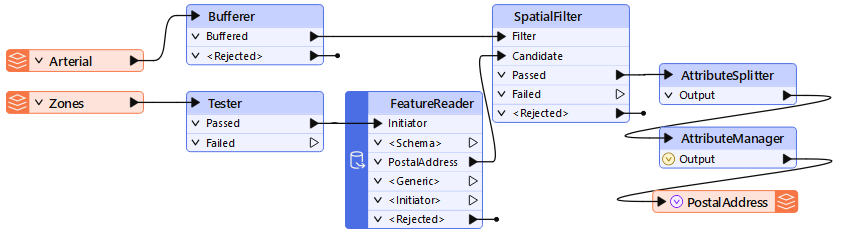
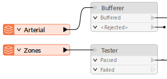
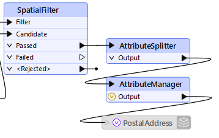
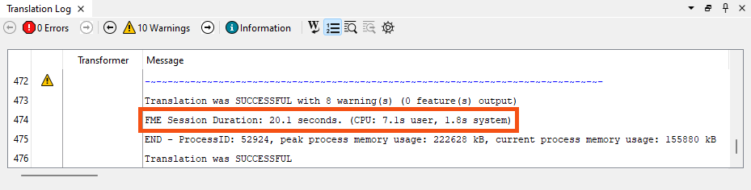
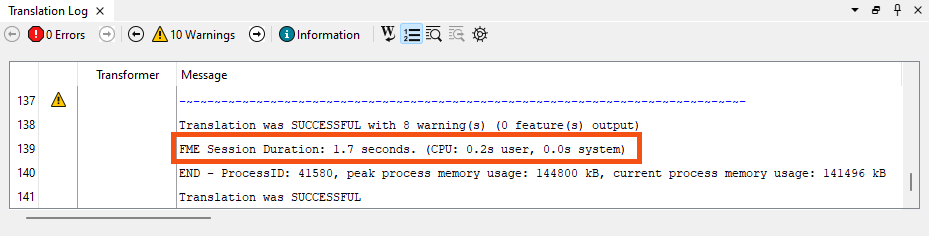
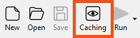

Learning Objectives
After completing this lesson, you’ll be able to:
- Measure how long a workspace takes to read data.
- Measure how long a workspace takes to write data.
- Measure how long a workspace's transformers take to run.
- Discover the performance liabilities of data caching.
- Analyze the relative performance of different sections of a workspace.
Instructions
In this lesson, you will:
- Scroll down to read the text below.
- Complete the exercise by following the steps.
- Complete the Quiz toward the bottom of the page.
- Optional: Let us know if you found this lesson relevant to your role by filling out the survey at the bottom of the page.
- Click 'Next' to mark the lesson complete.
Resources
Assessing the performance of a workspace such as this:

...requires a bit of time and attention, but knowing how a workspace performs helps to make informed decisions about how best to design (or redesign) it.
When testing for performance, ensure that only one instance of FME is running and that all other non-essential programs are closed. You'll also need to turn off data caching, which can affect the results. Finally, you must turn on log timestamping under Utilities > FME Options > Translation > Log Timestamp Information.

⭐ New for FME 2025.1: we've simplified the ability to write a CSV with some performance profiling information. You can access it under Run > Enable Performance Profiling. After running, FME will write a CSV to the same directory as the workspace with some performance timing information. Note that it provides times at the factory level, making interpretation tricky. The method outlined in this lesson will be more useful in most cases.
Improving a reader's efficiency requires estimating how well it works, yet it can take a lot of work to separate the reading speed in a workspace that also transforms data.
The key message that signifies the reading is complete is “Emptying Factory Pipeline.” Here, for example, the reading of the data finished after 26.4 seconds of processing (of course, the actual elapsed time might be longer if FME was waiting for a database or the file system to respond):
2024-03-29 11:48:54| 26.4| 0.0|INFORM|Emptying factory pipeline
However, sometimes, that message can be misleading. FME processes the data at the same time it is reading it, so that it won't read an entire data set before processing. To avoid this confusion, disable all the transformers and run only the readers:

With the transformers disabled, the message now appears much sooner:
2024-03-29 11:49:35| 1.2| 0.0|INFORM|Emptying factory pipeline
So, we can tell that reading the data only takes 1.2 seconds.
As with readers, you can only improve a writer's performance if you can first assess how well it is already performing. However, assessing the writing speed has the same complexity as reading: FME starts writing data as soon as it becomes available and doesn’t necessarily wait until processing is done.
So, how can we assess writer performance? Assessing a writer is different from assessing a reader. If you isolate the writers by disabling everything else, there won't be any data to write!
The easiest way is to disable the writer itself!

If the original result was this:
2024-03-29 11:54:14| 26.5| 0.0|INFORM|Translation was SUCCESSFUL with 19 warning(s) (148 feature(s) output)
2024-03-29 11:54:14| 26.5| 0.0|INFORM|FME Session Duration: 26.7 seconds. (CPU: 22.5s user, 4.0s system)
...and with the writer disabled, it is now this:
2024-03-29 11:56:48| 26.6| 0.0|INFORM|Translation was SUCCESSFUL with 19 warning(s) (0 feature(s) output)
2024-03-29 11:56:48| 26.6| 0.0|INFORM|FME Session Duration: 26.6 seconds. (CPU: 22.1s user, 4.4s system)
...then we can easily calculate that the writing process is taking merely 0.1 seconds.
Assessing the time taken in transformation requires a two-step process.
First, disable writers and run the translation, taking note of the elapsed time:

Then disable the transformers, too, and rerun the workspace to calculate the time taken to read the data only:

The elapsed transformation time is the difference between the time spent reading the data and the time spent reading and transforming the data. In this case, 20.1 - 1.7 = 18.4 seconds spent transforming the data.
It's important not to add an Inspector or Logger transformer to see what happens to the output. This will slow the translation down and give you a false measure. You must also be sure to disable the actual writer and not just the feature types or connections to them.
The only writer helpful in this scenario is the Null format writer. This causes a writer to be present, but it does nothing except count features and discard them. The benefit is improved logging of record counts, but without any data having to be written.
Naturally, where a FeatureReader or FeatureWriter transformer is used, assessing reading and writing requires a different procedure:
It would be necessary to run the workspace twice, once with everything disabled after that point and once with everything disabled up to (and including) that point. Then, subtract the two run times to get the correct result.
Exercise

The provincial government has funded new public art for the city's parks. A colleague built a workspace to analyze how much art each park already has, and Jennifer wants to run a code review to confirm it is efficient and well designed. Her colleague's workspace reads public art, parks, and orthophoto data and writes the amount of art in each park.
In this exercise, you will:
- Measure a workspace's total runtime with and without data caching.
- Isolate the reader, transformer, and writer stages by disabling parts of the workspace.
- Calculate how long each stage of the workspace takes.
1) Open and Run the Starting Workspace
Reading from the web introduces variability that makes it hard to assess performance accurately, so this workspace uses local paths to C:\FMEData. Your colleague ran it with caching turned on and reported about twenty seconds, so you will start by reproducing that baseline.
- Start FME Workbench (2026.2 or later).
- Open your starting workspace (C:\FMEData\Workspaces\UseDataIntegrationBestPractices\assess-workspace-performance.fmw).
- If you do not have FMEData on your machine, download the source data from the Resources section above and point the workspace at your local files.
- Run the workspace with data caching enabled and the default parameters.
- Note the total runtime.
2025-07-10 15:40:11| 15.4| 0.0|INFORM|Translation was SUCCESSFUL with 9 warning(s) (70 feature(s) output)
2025-07-10 15:40:11| 15.4| 0.0|INFORM|FME Session Duration: 16.4 seconds. (CPU: 11.1s user, 4.3s system)
2025-07-10 15:40:11| 15.4| 0.0|INFORM|END - ProcessID: 35068, peak process memory usage: 574780 kB, current process memory usage: 156892 kB
2) Run Without Data Caching
Data caching helps while you author a workspace, but it costs time you would not pay in production. Turning it off shows what the workspace really costs when it runs for real.

- Confirm that the workspace has no Inspector or Logger transformers and that no parts are disabled.
- Run the workspace.
- Observe that the workspace runs considerably faster, perhaps in as little as five seconds.
- In these examples, running without caching gives a 54% decrease in total runtime. The difference is even larger in a workspace processing large raster datasets.
- Caching should not be required in a production workspace, because the authoring and debugging phases of development are complete by then.
2025-07-10 15:39:19| 5.1| 0.0|INFORM|Translation was SUCCESSFUL with 2 warning(s) (70 feature(s) output)
2025-07-10 15:39:19| 5.1| 0.0|INFORM|FME Session Duration: 5.7 seconds. (CPU: 3.1s user, 2.0s system)
2025-07-10 15:39:19| 5.1| 0.0|INFORM|END - ProcessID: 68592, peak process memory usage: 444516 kB, current process memory usage: 154644 kB
The workspace already runs quickly, but you can still measure how much of the runtime each section costs. Disabling parts of the workspace in stages separates reading from transforming from writing.
- Disable all components after the readers.
- Run the workspace, still without caching.
- Note the runtime.
2025-07-10 15:38:27| 1.7| 0.0|INFORM|Translation was SUCCESSFUL with 2 warning(s) (0 feature(s) output)
2025-07-10 15:38:27| 1.7| 0.0|INFORM|FME Session Duration: 1.9 seconds. (CPU: 0.9s user, 0.8s system)
2025-07-10 15:38:27| 1.7| 0.0|INFORM|END - ProcessID: 7236, peak process memory usage: 141920 kB, current process memory usage: 128364 kB
- Enable all transformers, leaving only the writers disabled.
- Run the workspace.
- Note the runtime.
2025-07-10 15:37:28| 1.9| 0.0|INFORM|Translation was SUCCESSFUL with 2 warning(s) (0 feature(s) output)
2025-07-10 15:37:28| 1.9| 0.0|INFORM|FME Session Duration: 2.3 seconds. (CPU: 1.1s user, 0.8s system)
2025-07-10 15:37:28| 1.9| 0.0|INFORM|END - ProcessID: 63704, peak process memory usage: 173540 kB, current process memory usage: 152356 kB
- Calculate the length of each stage of the workspace.
- Reading data: the first partial run.
- Transforming data: the second partial run minus the first partial run.
- Writing data: the overall run minus the second partial run.
- You will need these answers for the quiz.